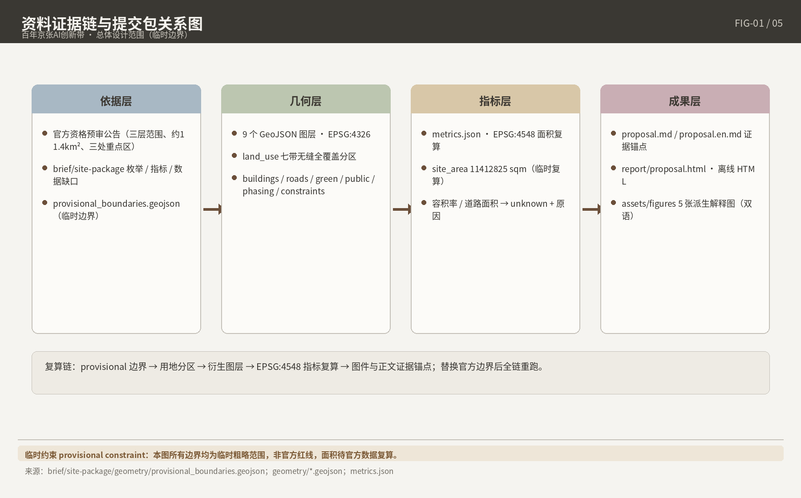
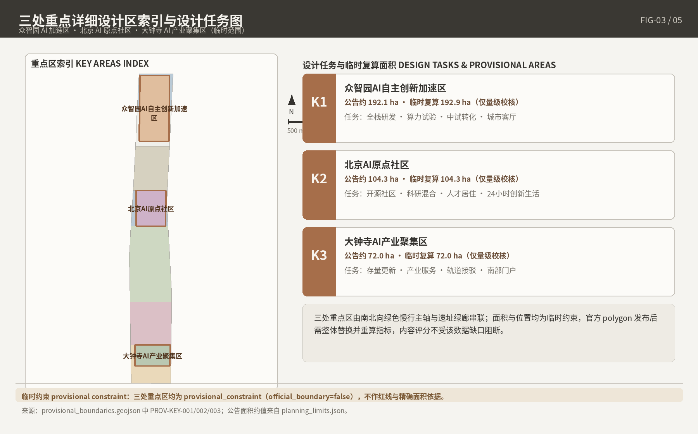
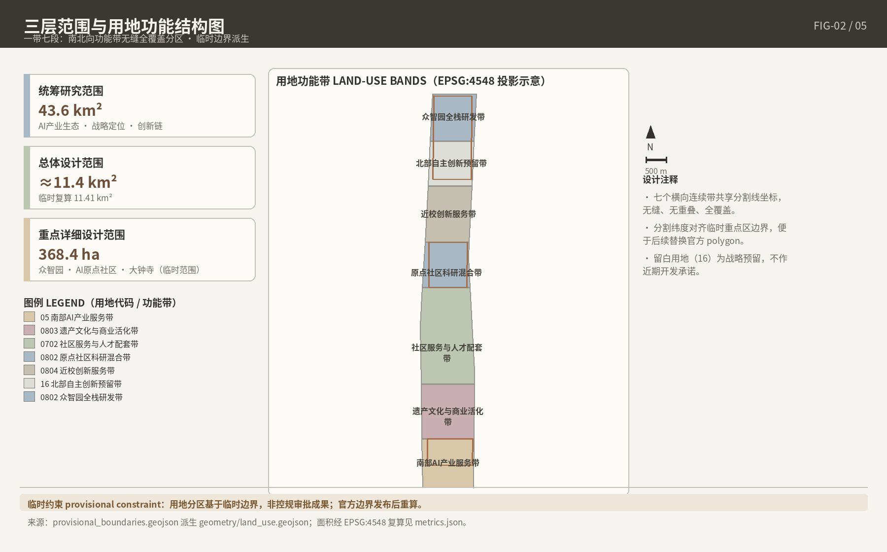
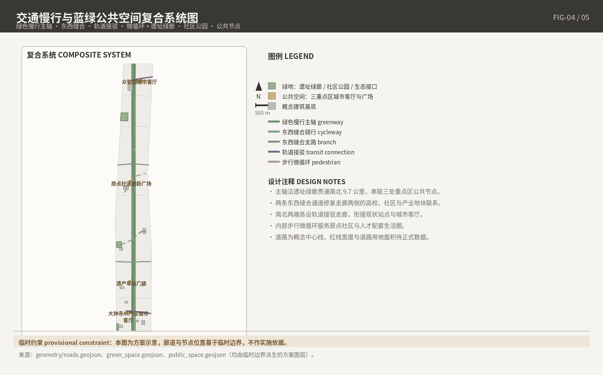

总览地图与三层范围

用地分区
蓝绿公共空间
建筑与更新项目
交通慢行
三层范围：43.6 km² 统筹研究范围 / 11.4 km² 总体设计范围 / 368.4 ha 重点区域（三处）。图示基于仓库登记的 provisional boundary，非官方红线。
重点区域（三处详细设计）

三处重点区域均为 provisional_constraint（official_boundary=false）：众智园AI自主创新加速区、北京AI原点社区、大钟寺AI产业聚集区。
用地分区与建筑

| 横向功能带 | 面积（m²） | 主导功能 |
|---|---|---|
| LU-001 | 1,517,250.379 | 北部创新策源带（众智园方向） |
| LU-002 | 1,738,608.869 | 清河蓝绿界面带 |
| LU-003 | 3,006,997.433 | 遗址公园活力主轴带 |
| LU-004 | 1,226,610.269 | 五道口近校创新带（原点社区） |
| LU-005 | 1,486,567.535 | 中部复合更新带 |
| LU-006 | 1,186,083.435 | 大钟寺产业集聚带 |
| LU-007 | 1,250,702.653 | 南部城市服务带 |
七条横向连续功能带无缝、无重叠、全覆盖总体设计范围；七带合计与 site_area_sqm 存在 4.813 m² 的复算舍入差，已在方案第 7 章披露。建筑图层含 11 个概念建筑基底，建筑基底总面积 203,401.112 m²，总建筑规模 2,040,210.034 m² 为低置信设计估算（非审定指标）。
交通慢行与蓝绿公共空间

| 系统要素 | 指标 | 设计说明 |
|---|---|---|
| 绿地 | 1,290,877.036 m² | 京张遗址公园活力带为骨架，衔接清河、小月河蓝绿廊道 |
| 公共空间 | 84,399.550 m² | 站前广场、路演客厅、开源发布厅等可运营节点 |
| 道路慢行 | 7 条 LineString | roads.geojson 表达微循环、慢行缝合与轨道接驳；road_area_sqm 为 unknown（无官方道路红线） |
轨道事实口径：13 号线拆分未完成；北部新建段以 18 号线名义于 2025-12-27 部分开通；清华东路西口站未开通；大钟寺 12/13 号线站内换乘未启用（仍为站外换乘，合理推断不早于 2027 年底）。
AI 场景与更新项目
AI 场景（12 张场景卡，摘列）
01 开源发布厅02 安全治理沙盒03 端侧算力驿站04 AI 慢行导航05 大钟寺国际路演客厅06 清河低碳创新廊07 近校成果转化街08 数据要素会客厅09 AI 生活服务样板街10 全球 AI 活动周路线11 遗产叙事 AR 步道12 社区议事智能助手全部场景遵循数据最小化、公开来源、可解释、人工复核原则；不采集个人行为轨迹，不输出未经授权的个人画像；均为概念建议，不构成政府实施承诺。另含 3 个产业测试验证场景与 6 类用户画像，详见 proposal.md 第 6 章。
更新项目与分期
| 分期 | 面积（m²） | 实施逻辑 |
|---|---|---|
| 近期（PHASE-001） | 2,743,860.648 | 轻量设施、运营活动与服务平台先行启动 |
| 中期（PHASE-002） | 6,232,173.837 | 更新项目实施，等待正式控规与权属条件 |
| 远期（PHASE-003） | 2,436,786.088 | 长期治理框架与运营固化 |
任务覆盖、自检状态、来源与假设
任务覆盖
- 公告 1.3 / 1.4 / 1.5 共 17 项必选任务 + agent.1–agent.6 共 6 项智能体任务：23 项全部 mandatory=true 覆盖（compliance_matrix.json）
- 15 项 formal 设计深度全部 status=complete（design_depth_matrix.json）
- 6 项强制标准：5 项 addressed；MOHURD-ARCH-DESIGN-DEPTH-2016 因 missing_source_url 标记为 data gap，不写成正式满足（standard_matrix.json）
自检状态
- deterministic validation / spatial review / professional review：见 self_check.json（提交前以最新运行结果为准）
- 边界状态：provisional geometry — 仅供方案生成、自检、可视化与设计讨论，不作为官方红线、审批依据或精确面积依据
来源与假设
- 正式来源清单：sources.json（含仓库 site package、官方公告、任务书、政府门户、权威媒体等登记条目）
- 14 条假设：assumptions.json（临时边界、官方红线缺失、控规缺失、权属/文保/市政/交通待确认、面积口径冲突、AI 场景合规等）
- 未知指标纪律：floor_area_ratio、road_area_sqm 等 15 项 unknown 指标均以文字说明原因，不给伪精确数值
本页面为完全离线静态文件：不加载远程脚本、瓦片、字体或图片，不含 iframe、表单、外部 API 或追踪代码。英文对照页：index.en.html。